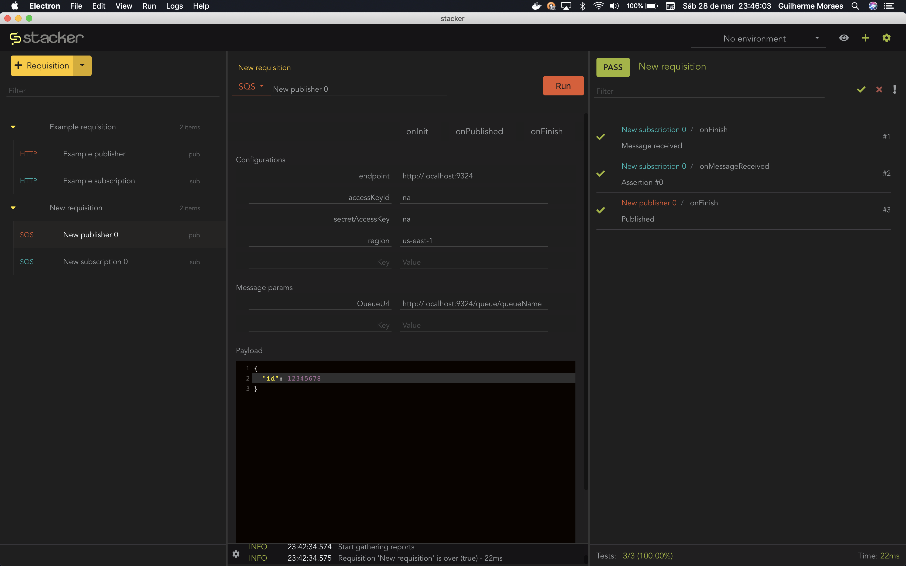
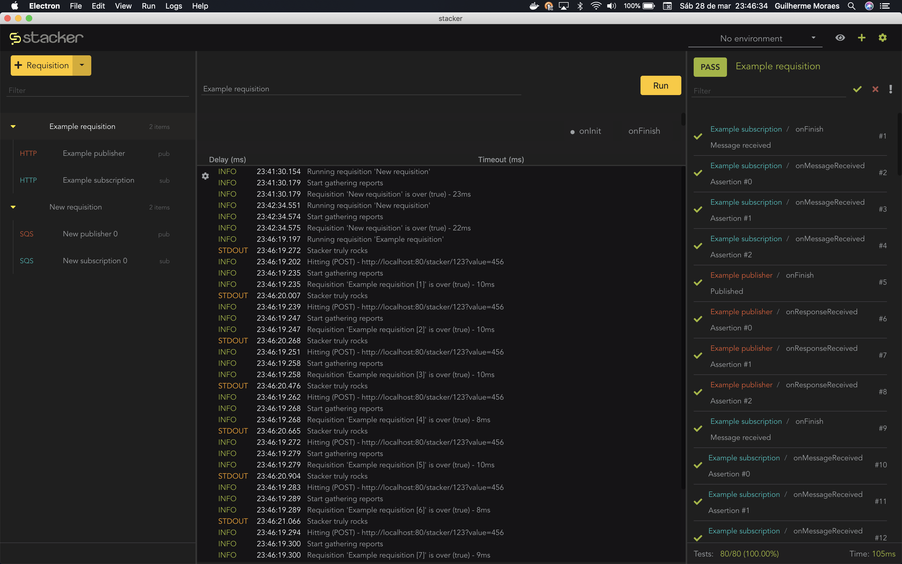

Open source, cross-platform, really good looking, multi protocol client testing tool
Get it now
Test driven
Assertions are the main reason to use this. Check whether each flowing by message matches what is expected:
- sent to where it was suppose to be sent
- contains what it should contain
- sent faster than the threshold
Multi protocol
Have you seen how many protocols it supports? Out of the box, just one click away from each other, including your own custom ones:
- HTTP
- Your own custom one
Automated testing with enqueuer
Do amazing things and change the world with Stacker’s command line best friend forever! With enqueuer, you use your stacker requisitions and:
- run them through command line
- improve your build system
Concept
Have you ever struggled with testing multi protocol flows?
Want to ensure that a user journey which involves several steps with different protocols is working properly?
Dependencies messages have become a pain?
Have you ever wondered how awesome it would be to have a GUI tool to save you from this agonizing pain?
You're welcome
Description
Stacker is a yet another GUI client for enqueuer to handle multi protocol tests. It aims to provide a clean, fun, and good looking interface for interacting with polyglot flows.

Features
This mankind magnificence provides the following capabilities:
- Support for many protocols out of the box
- Chainable message flows
- Easily mock numerous services to alleviate the headaches of functional and integration tests
- Friendly for developers and non developers
- Built in assertion library to verify response data coming from/going to your services
- Built in CLI is easy to add to your team's existing CI pipelines powered by enqueuer
- Easily extensible behavior through third party plugins, including your own custom ones. Check out this example
Test driven
Test are first class citizens, they are placed front and center here. Through assertions check whether each flowing by message matches what is expected:
- Sent to where it was suppose to be sent
- Contains what it should contain
- Sent faster than the threshold
Polyglot
Have you seen how many protocols it supports? Out of the box, just one click away from each other. There's a work in progress task force to enable an amazing plugin architecture so you'll be free to write your one or download the ones that pleased you most. In this meanwhile, you can have fun using one of the following:
- HTTP
- SHELL
- AMQP (WIP)
- MQTT (WIP)
- Include here your own. Check out this example

Reviews
Feedback
We'd love to hear your feedback! If you have any comments, suggestions, etc. you can reach us here.
Contribute
Currently, there aren't any said rules for stacker just yet on committing and submitting pull requests. If you want to aid the project in other ways, consider sending us a star.
Still in Beta
Stacker is still a beta version, so please excuse any small glitches that may occur here and there. They will all be gone soon. :)
Project setup
npm install # installing
npm run electron:serve # compiles and hot-reloads for development
npm run electron:build # compiles and minifies for production
npm run test # run your tests and lints files